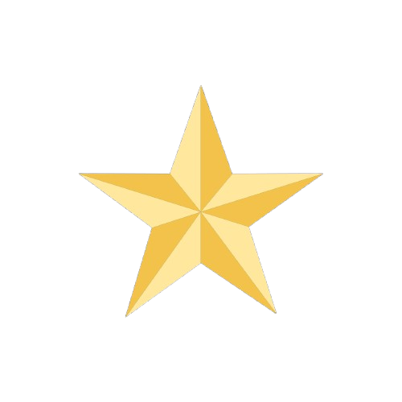
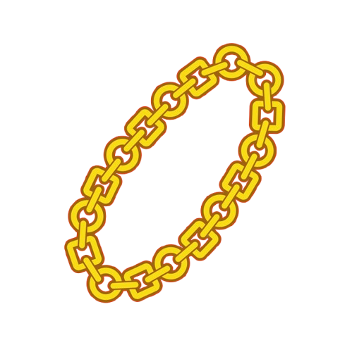
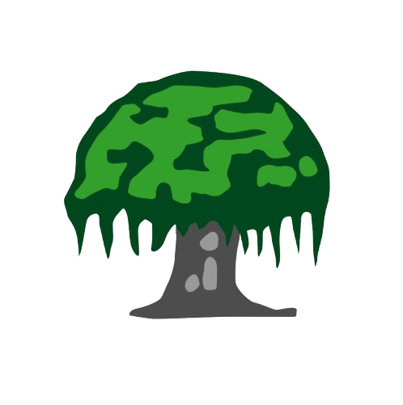
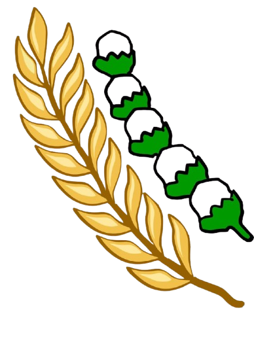

Memahami Makna di Balik 5 Sila Pancasila
Setiap sila memiliki simbol dan makna mendalam sebagai pedoman hidup kita.
Sila ke-1: Ketuhanan Yang Maha Esa

Makna Sila Pertama:
- Percaya dan takwa kepada Tuhan Yang Maha Esa sesuai dengan agama dan kepercayaan masing-masing.
- Mengembangkan sikap hormat-menghormati dan bekerja sama antar pemeluk agama.
- Membina kerukunan hidup di antara sesama umat beragama.
- Tidak memaksakan suatu agama atau kepercayaan kepada orang lain.
Sila ke-2: Kemanusiaan yang Adil dan Beradab

Makna Sila Kedua:
- Mengakui persamaan derajat, hak, dan kewajiban asasi setiap manusia tanpa membeda-bedakan.
- Mengembangkan sikap saling mencintai sesama manusia dan tenggang rasa.
- Menjunjung tinggi nilai-nilai kemanusiaan.
- Berani membela kebenaran dan keadilan.
Sila ke-3: Persatuan Indonesia

Makna Sila Ketiga:
- Menempatkan persatuan, kesatuan, serta kepentingan bangsa dan negara di atas kepentingan pribadi atau golongan.
- Rela berkorban untuk kepentingan negara dan bangsa.
- Mengembangkan rasa cinta kepada tanah air dan bangsa.
- Mengembangkan persatuan Indonesia atas dasar Bhinneka Tunggal Ika.
Sila ke-4: Kerakyatan yang Dipimpin oleh Hikmat Kebijaksanaan dalam Permusyawaratan/Perwakilan
Makna Sila Keempat:
- Mengutamakan musyawarah untuk mufakat dalam setiap pengambilan keputusan.
- Musyawarah dilakukan dengan akal sehat dan sesuai dengan hati nurani yang luhur.
- Menghormati dan menjunjung tinggi setiap keputusan yang dicapai sebagai hasil musyawarah.
- Memberikan kepercayaan kepada wakil-wakil yang dipercayai untuk melaksanakan permusyawaratan.
Sila ke-5: Keadilan Sosial bagi Seluruh Rakyat Indonesia

Makna Sila Kelima:
- Mengembangkan perbuatan luhur yang mencerminkan sikap dan suasana kekeluargaan dan gotong-royong.
- Mengembangkan sikap adil terhadap sesama.
- Menjaga keseimbangan antara hak dan kewajiban.
- Suka memberi pertolongan kepada orang lain agar dapat berdiri sendiri.